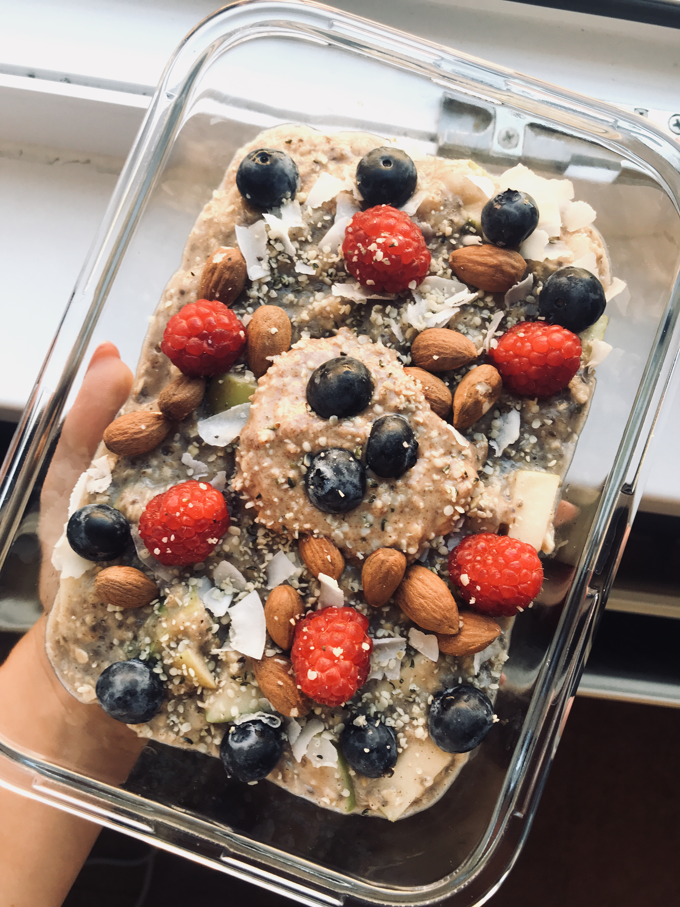

Ovesná kaše s ořechy a ovocem
- Ingredience
- 80g ovesných vloček
- 250ml mandlového mléka
- 1 lžíce chia semínek
- Špetka skořice
- 20g mandlí
- Ovoce na ozdobení
Do malého kastrolu dejte mandlové mléko, oves, chia semínka a nechte ho přijít k varu. Vařte asi 5-7 minut na středním ohni za občasného míchání. Poté přendejte kaši do misky a ozdobte ořechy, čerstvým ovocem či čímkoliv jiným dle libosti.